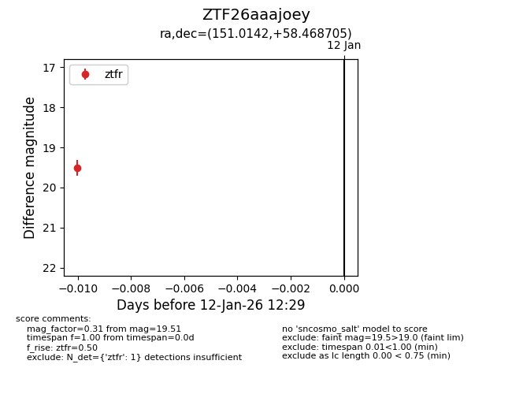
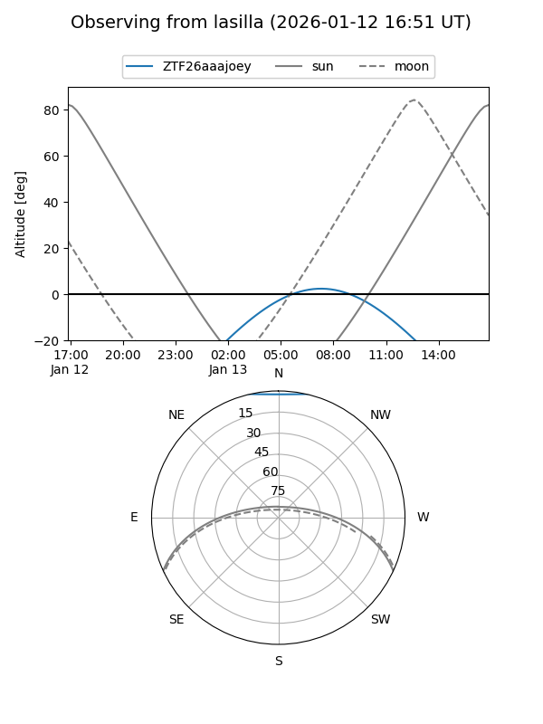
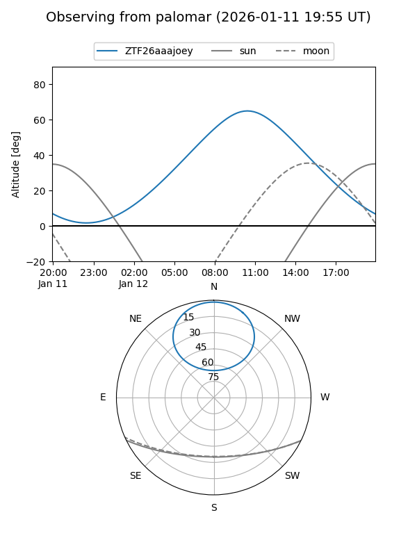

ZTF26aaajoey
Target ZTF26aaajoey at 2026-01-12 12:30
Aliases and brokers:
FINK: link
Lasair: link
ALeRCE: link
alt names
ZTF26aaajoey (ztf,fink_ztf)
Coordinates:
equatorial (ra, dec) = 151.0142,+58.46870
equatorial (HMS+DMS) = 10:04:03.41,+58:28:07.34
galactic (l, b) = (153.9185,+47.33958)
Flags:
Photometry:
last ztfr=19.51
1 ztfr detections
Lightcurve

Visibility


Additional plots